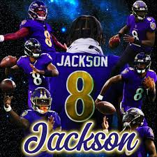

Lamar Jackson (born January 7, 1997) is a record-setting Baltimore Ravens quarterback and two-time NFL MVP (2019, 2023). Drafted 32nd overall in 2018 out of Louisville, the 6'2" dual-threat QB holds records for the most quarterback rushing yards in a season (1,206 in 2019) and has guided the Ravens to multiple playoff appearances
